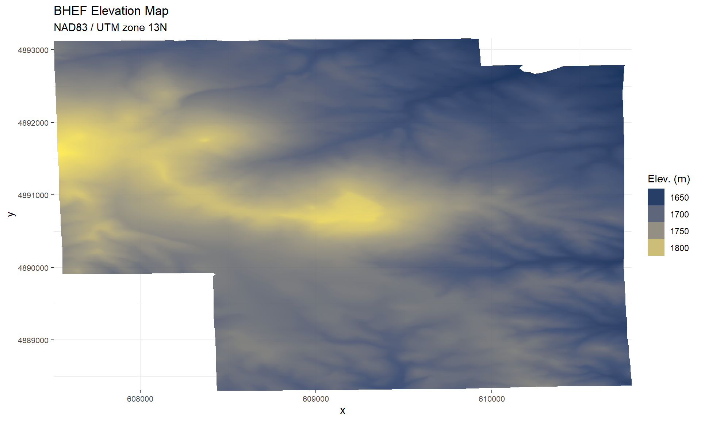
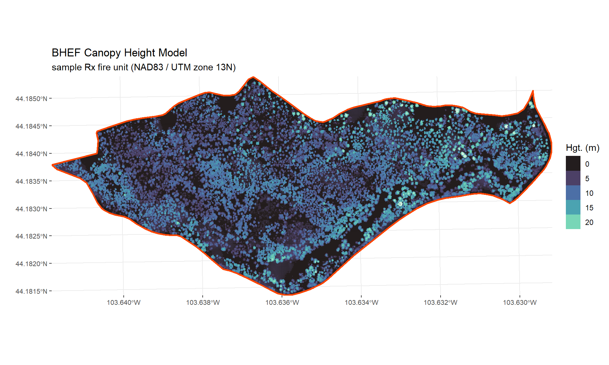
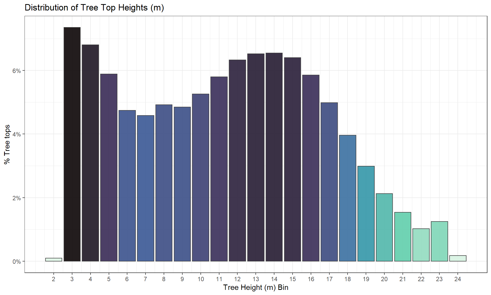

Chapter 4 Analyze Lidar Data
# turn off the s2 processing
## https://stackoverflow.com/questions/68478179/how-to-resolve-spherical-geometry-failures-when-joining-spatial-data
sf::sf_use_s2(FALSE)4.1 Download Lidar Data From Nat’l Map
The USGS National Map was used to obtain a list of file download links for “Elevation Source Data (3DEP) - Lidar, IfSAR” data available marked as “Lidar Point Cloud (LPC)”. This download file list was placed in the data folder where the code below utilizes it to download data. The “thumbnail” option in the Nat’l Map was used to determine that the “Fugro” data will suffice to cover the BHEF area. Also, downloaded NAIP imagery while had ROI drawn in Nat’l Map.
#######################################################
#######################################################
# lidar data
#######################################################
#######################################################
# open download text file
urls <- read.delim("../data/usgs_lidar_data.txt", header = FALSE) %>%
dplyr::rename(url_path = 1) %>%
dplyr::filter(grepl("FUGRO", toupper(url_path)) == TRUE) %>%
dplyr::mutate(
orig_fname = word(gsub("/", " ", url_path), -1)
, fname_sans_typ = gsub(".laz", "", orig_fname)
)
# create parent directory for data
hey_dir <- "../data/lidar/"
if(dir.exists(hey_dir)==FALSE){
dir.create(hey_dir)
}
#loop through to download lidar data
for(i in 1:nrow(urls)){
# set up names
f_nm <- paste0(hey_dir
, urls$orig_fname[i]
)
options(timeout = 60 * 15)
########################
## download and unzip
########################
if(file.exists(f_nm)==FALSE){
# download
download.file(urls$url_path[i], destfile = f_nm)
}else{
print(paste0(f_nm, " file already exists"))
}
}4.2 Load Vector Data
Spatial data was loaded and cleaned in prior chapter.
# save cleaned data for reading to R later
forests_bhnf <- sf::st_read("../data/forests_bhnf.gpkg")
bhef_boundary <- sf::st_read("../data/bhef_boundary.gpkg")
bhef_harvests <- sf::st_read("../data/bhef_harvests.gpkg")
research_plots <- sf::st_read("../data/research_plots.gpkg")
stem_map <- sf::st_read("../data/stem_map.gpkg")
rx_fire <- sf::st_read("../data/rx_fire.gpkg")4.3 Load Elevation Data
Using elevatr::get_elev_raster to get a digital elevation model (DEM) raster (~6.8m resolution).
# read in elevation data
# z =14 is highest resolution (~6.8m)
if(file.exists("../data/bhef_elev.tif") == FALSE){
elev <- elevatr::get_elev_raster(bhef_boundary, z = 14)
# sf::st_crs(elev) == sf::st_crs(bhef_boundary)
bhef_elev <- stars::st_as_stars(elev)
# sf::st_transform(crs = sf::st_crs(bhef_boundary))
# save
stars::write_stars(bhef_elev, "../data/bhef_elev.tif", append = FALSE)
}else{
bhef_elev <- stars::read_stars("../data/bhef_elev.tif")
}
# plot
ggplot() + stars::geom_stars(data = bhef_elev[bhef_boundary]) +
scale_fill_viridis_c(option = "cividis", alpha = 0.9, na.value = "transparent") +
labs(
title = "BHEF Elevation Map"
, subtitle = sf::st_crs(bhef_elev)$input
) +
scale_x_continuous(expand = c(0, 0)) +
scale_y_continuous(expand = c(0, 0)) +
theme_bw() +
theme(
axis.text = element_text(size = 8)
# , panel.grid = element_blank()
, panel.border = element_blank()
) +
guides(
fill = guide_legend(title="Elev. (m)")
)
4.4 Load Lidar Data
Use the lidR package for manipulating and visualizing point cloud data. See the very helpful book by Roussel, J.R., Goodbody, T.R.H., and Tompalski P. (2021) for more information.
# list laz files
lazs <- list.files("../data/lidar/", pattern = "\\.laz$", full.names = TRUE)
# change projection of DEM
# # creating a new regular grid in a new CRS
# newgrid <- bhef_boundary %>%
# sf::st_transform(crs = sf::st_crs( lidR::readLAS(lazs[1], select = "xyz") )) %>%
# sf::st_bbox() %>%
# stars::st_as_stars()
# # set up old grid to warp back
# oldgrid <- bhef_boundary %>%
# sf::st_bbox() %>%
# stars::st_as_stars()
# # warping the old raster to the new grid
# bhef_elev_reproj <- bhef_elev %>%
# stars::st_warp(newgrid)
bhef_elev_reproj <- bhef_elev %>% stars::st_warp(crs = sf::st_crs( lidR::readLAS(lazs[1], select = "xyz") ))
######################################################
# read laz files
######################################################
# If several files are read at once the returned LAS object is considered as one LAS file.
# las <- lidR::readLAS(lazs[2], select = "xyz") # load XYZ only
las <- lidR::readLAS(lazs, select = "xyz") # load XYZ only
# lidR::las_check(las)
# remove duplicate points
las <- lidR::filter_duplicates(las)
# lidR::las_check(las)
# summary(las$Z)
# sf::st_crs(las)
# temp_plot <- plot(las, color = "Z", breaks = "quantile", bg = "white")
# temp_plot
# # add_treetops3d(temp_plot, tree_tops)
######################################################
# remove outliers
######################################################
# Use Statistical Outliers Removal (SOR)
# k = number of neighbors
# m = multiplier in : avg distance + m * std deviation
las <- lidR::classify_noise(las, sor(k = 15, m = 7))
# plot(las, color = "Classification", bg = "white", size = 3)
# Remove outliers using filter_poi()
las <- lidR::filter_poi(las, Classification != LASNOISE)
# plot(las, color = "Z", breaks = "quantile", bg = "white")
# #repeat process with Isolated Voxels Filter IVF
# las <- lidR::classify_noise(las, ivf(res = 5, n = 6))
# # plot(las, color = "Classification", bg = "white", size = 3)
# # Remove outliers using lidR::filter_poi()
# las <- lidR::filter_poi(las, Classification != LASNOISE)
# plot(las, color = "Z", breaks = "quantile", bg = "white")
# #####################################################
# Ground classification
# !!!!!!!!!!!!!!!!!!!!!!!!!! This is computationally intensive :'(
# #####################################################
# ##################################################
# Progressive Morphological Filter The implementation of PMF algorithm in lidR
# is based on the method described in Zhang et al. (2003)
# ##################################################
# # # b numeric. This is the parameter b in Zhang et al. (2003) (eq. 4 and 5).
# # # dh0 numeric. This is dh0 in Zhang et al. (2003) (eq. 7).
# # # dhmax numeric. This is dhmax in Zhang et al. (2003) (eq. 7).
# # # s numeric. This is s in Zhang et al. (2003) (eq. 7).
# # # max_ws numeric. Maximum window size to be used in filtering ground returns. This
# # # limits the number of windows created.
# # # exp logical. The window size can be increased linearly or exponentially (eq. 4 or 5).
# # lidR::util_makeZhangParam(
# # b = 2,
# # dh0 = 0.2,
# # dhmax = 210,
# # s = 1.2,
# # max_ws = 20,
# # exp = FALSE
# # )
# las <- lidR::classify_ground(las, algorithm = pmf(
# ws = lidR::util_makeZhangParam()$ws
# , th = lidR::util_makeZhangParam()$th
# )
# )4.4.1 Height normalization using DEM
######################################################
# Height normalization using DEM
# could create own DEM with lidar data ...
# but will use out of the box product for now
######################################################
# subtract DEM from lidar returns
nlas <- las - bhef_elev_reproj
# correct for below ground returns
nlas@data$Z <- ifelse(
ceiling(nlas@data$Z) == 0
| floor(nlas@data$Z) == 0
| nlas@data$Z <= 0
, 0, nlas@data$Z
)
# nlas <- filter_poi(nlas, Z >= 0) # remove below ground points
nlas@data$Z <- ifelse(nlas@data$Z <= 0, 0, nlas@data$Z)
# update classification
nlas@data$Classification <- ifelse(nlas@data$Z==0, 2, nlas@data$Classification)
# filter out top 0.2% heights
nlas <- filter_poi(nlas, Z <= stats::quantile((nlas@data %>% dplyr::filter(Classification==1))$Z, 0.998))
# plot(nlas, color = "Z", breaks = "pretty", bg = "white")
# summary(nlas$Z)
# table(nlas$Classification)
# ######################################################
# # Height normalization using point cloud interpolation
# # !!!!!! must run ground classification above first
# ######################################################
# # point cloud normalization using interpolation
# nlas <- normalize_height(las, knnidw())
# # plot(nlas, color = "Z", breaks = "pretty", bg = "white")
# # plot(lidR::filter_ground(nlas), color = "Classification", bg = "white")
# # summary(nlas$Z)
# # table(nlas$Classification)
# descriptive stats
kable(nlas@data %>%
dplyr::group_by(
Classification
) %>%
dplyr::summarise(
# plots = dplyr::n_distinct(plot)
points = dplyr::n()
, min_z = min(Z)
, max_z = max(Z)
, mean_z = mean(Z)
, median_z = median(Z)
, stdev_z = sd(Z)
) %>%
dplyr::arrange(Classification) %>%
dplyr::mutate(
Classification = dplyr::case_when(
Classification == 1 ~ "Surface"
, Classification == 2 ~ "Ground"
, TRUE ~ "Other"
)
)
, format = "html"
, caption = "Point Cloud Summary Statistics for Return Height (Z)"
, digits = 1
, col.names = c(
"Classification"
, "points"
, "min"
, "max"
, "mean"
, "median"
, "st.dev."
)
, align=rep('c', 5)
) %>%
# kable_classic() %>%
add_header_above(c(" " = 2, "Point Return Height (m)" = 5)) %>%
kable_material(c("striped", "hover")) %>%
# column_spec(., 2, width = "20em") %>%
kable_styling(font_size = 11)
# ggplot() + geom_histogram(data = (nlas@data %>% dplyr::filter(Classification == 1)), aes(Z), binwidth = 1)4.4.2 Canopy Height model
######################################################
# Canopy Height model
######################################################
# Points-to-raster algorithm with a resolution of 1 meter
chm <- lidR::rasterize_canopy(
nlas
, res = 1
# for each pixel of the output raster the function attributes the height of the highest point found
, p2r(subcircle = 0.0
# , na.fill = tin()
, na.fill = knnidw(
k = 10
, p = 2
, rmax = 5
)
)
, pkg = "terra"
)
# smooth chm pixels with median value in 3x3 matrix
kernel <- matrix(1,3,3)
chm_smooth <- terra::focal(chm, w = kernel, fun = median, na.rm = TRUE) %>%
stars::st_as_stars() %>%
stars::st_warp(crs = sf::st_crs(bhef_boundary))
# %>%
# sf::st_transform(crs = sf::st_crs(bhef_boundary))
# non smoothed
chm <- chm %>%
stars::st_as_stars() %>%
stars::st_warp(crs = sf::st_crs(bhef_boundary))
# plot
# ggplot() +
# stars::geom_stars(data = chm_smooth) +
# geom_sf(data = sf::st_crop(bhef_boundary, sf::st_bbox(chm_smooth)), alpha = 0, lwd = 0) +
# scale_fill_viridis_c(option = "mako", alpha = 0.9) +
# labs(
# title = "BHEF Canopy Height Model"
# , subtitle = sf::st_crs(chm_smooth)$input
# ) +
# scale_x_continuous(expand = c(0, 0)) +
# scale_y_continuous(expand = c(0, 0)) +
# theme_bw() +
# theme(
# # legend.position = "bottom"
# # , legend.direction = "horizontal"
# axis.text = element_text(size = 8)
# # , panel.grid = element_blank()
# , panel.border = element_blank()
# ) +
# guides(
# fill = guide_legend(title="Hgt. (m)")
# ) 4.4.3 Individual Tree Detection (ITD)
######################################################
# Individual Tree Detection (ITD)
######################################################
# local maximum filtering (LMF) with variable window size
# points below 2 m will equate to a window size of 3 m,
# while points above 20 meters equate to a window size of 5 m.
# Anything between 2 and 20 meter will have a non-linear relationship
# define variable window function
ws_fn <- function(x) {
y <- 2.6 * (-(exp(-0.08*(x-2)) - 1)) + 3
y[x < 2] <- 3
y[x > 20] <- 5
return(y)
}
# ITD on CHM
tree_tops <- lidR::locate_trees(chm_smooth, lmf(ws = ws_fn)) %>%
# create classes based on Steel et al. 2021
dplyr::mutate(
tree_class = dplyr::case_when(
Z > 8 ~ 3 # canopy
, Z >= 2 ~ 2 # subcanopy
, Z >= 1 ~ 1 # understory
, TRUE ~ 0 # ground
)
)
# plot
# ggplot() +
# stars::geom_stars(data = chm_smooth) +
# geom_sf(data = tree_tops, color = viridis::viridis(n=1, direction = -1), alpha = 0.7, shape = ".") +
# scale_fill_viridis_c(option = "mako", alpha = 0.9) +
# labs(
# title = "BHEF Canopy Height Model with Tree Tops Identified (yellow)"
# , subtitle = sf::st_crs(chm_smooth)$input
# ) +
# theme_bw() +
# scale_x_continuous(expand = c(0, 0)) +
# scale_y_continuous(expand = c(0, 0)) +
# theme(
# axis.text = element_text(size = 8)
# # , panel.grid = element_blank()
# , panel.border = element_blank()
# ) +
# guides(
# fill = guide_legend(title="Hgt. (m)")
# )
# hey_plot <- plot(nlas, color = "Z", breaks = "pretty", bg = "white")
# add_treetops3d(hey_plot, tree_tops <- lidR::locate_trees(chm_smooth, lmf(ws = ws_fn)), col = "black")
# ?lidR::pixel_metrics()4.4.3.1 Distribution of Tree Top Heights
######################################################
# height range of tree tops
######################################################
tree_tops %>% sf::st_set_geometry(NULL) %>%
dplyr::mutate(height_ceil = ceiling(Z)) %>%
dplyr::group_by(height_ceil) %>%
dplyr::summarise(n = n()) %>%
dplyr::ungroup() %>%
dplyr::mutate(
pct_tot = n / sum(n)
) %>%
ggplot(.) +
# geom_col(aes(x = height_ceil, y = n, fill = n)) +
geom_bar(aes(x = height_ceil, y = pct_tot, fill = n), color = "gray25", stat = "identity") +
scale_y_continuous(labels = scales::label_percent(accuracy = 1L)) +
scale_x_continuous(breaks = seq(min(tree_tops$Z), max(tree_tops$Z)+1, 1))+
scale_fill_viridis_c(alpha = 0.9, option = "mako", direction = -1) +
labs(
title = "Distribution of Tree Top Heights (m)"
) +
xlab("Tree Height (m) Bin") +
ylab("% Tree tops") +
theme_bw() +
theme(
legend.position="none"
) 
4.4.4 Individual Tree Segmentation (ITS)
Segment the canopy height model raster grid as individual trees. Create a vector representation of tree groupings and summary statistics of height for each group.
######################################################
# Individual Tree Segmentation (ITS)
######################################################
# implements an algorithm for tree segmentation based on
# Dalponte and Coomes (2016) algorithm (see reference).
# This is a seeds + growing region algorithm.
algo <- lidR::dalponte2016(chm = chm, treetops = tree_tops, th_tree = 2)
crowns_st <- algo()
# quick plot
# plot(crowns_st, col = lidR::pastel.colors(200), main = "Individual Tree Crowns")
# transform crowns stars object to vector data
crowns_sf <- crowns_st %>%
# convert to vector data and merge polygons with identical pixel values
sf::st_as_sf(as_points = FALSE, merge = TRUE) %>%
# transform to same crs as rest of data
sf::st_transform(crs = st_crs(bhef_boundary)) %>%
dplyr::mutate(
tree_id = values
, crown_area = sf::st_area(.)
) %>%
dplyr::relocate(tree_id, crown_area) %>%
dplyr::select(tree_id, crown_area) %>%
sf::st_set_precision(1e7) %>%
sf::st_make_valid(.) %>%
dplyr::filter(sf::st_is_valid(.))
# combine crown groups
crowns_group <- sf::st_cast(
sf::st_union(crowns_sf)
, "POLYGON")
# quick plot
# plot(crowns_group, col = lidR::pastel.colors(200), main = "Tree Crown Groups")
#create id column
crowns_group <- crowns_group %>%
merge(., data.frame(geo_type = sf::st_geometry_type(crowns_group)), by.x=0, by.y=0, all.x=TRUE) %>%
dplyr::mutate(crown_group_id = as.numeric(as.factor(Row.names))) %>%
dplyr::select(-c(geo_type, Row.names)) %>%
dplyr::relocate(crown_group_id) %>%
sf::st_as_sf(., sf_column_name = "geometry", crs = sf::st_crs(bhef_boundary))
# join back to individual tree crowns and summarize
crowns_group_sum <- sf::st_intersection(tree_tops, crowns_group) %>%
# if need to keep group at tree level... break here
sf::st_set_geometry(NULL) %>%
dplyr::group_by(crown_group_id) %>%
dplyr::summarise(
count_trees = dplyr::n_distinct(treeID)
, min_hgt_m = min(Z, na.rm = TRUE)
, max_hgt_m = max(Z, na.rm = TRUE)
, mean_hgt_m = mean(Z, na.rm = TRUE)
, median_hgt_m = median(Z, na.rm = TRUE)
, median_hgt_m = median(Z, na.rm = TRUE)
, quant10_hgt_m = as.numeric( quantile(Z, probs = .10, na.rm = TRUE) )
, quant25_hgt_m = as.numeric( quantile(Z, probs = .25, na.rm = TRUE) )
, quant50_hgt_m = as.numeric( quantile(Z, probs = .50, na.rm = TRUE) )
, quant75_hgt_m = as.numeric( quantile(Z, probs = .75, na.rm = TRUE) )
, quant90_hgt_m = as.numeric( quantile(Z, probs = .90, na.rm = TRUE) )
, count_trees_canopy = sum(ifelse(tree_class == 3, 1, 0), na.rm = TRUE)
, count_trees_subcanopy = sum(ifelse(tree_class == 2, 1, 0), na.rm = TRUE)
, count_trees_understory = sum(ifelse(tree_class == 1, 1, 0), na.rm = TRUE)
, count_trees_ground = sum(ifelse(tree_class == 0, 1, 0), na.rm = TRUE)
) %>%
dplyr::ungroup() %>%
dplyr::arrange(crown_group_id) %>%
dplyr::mutate(
crown_group_class = dplyr::case_when(
count_trees == 1 ~ "Individual Tree"
, count_trees <= 10
& count_trees_canopy/count_trees >= .75 ~ "Small Group - Canopy"
, count_trees <= 10
& count_trees_subcanopy/count_trees >= .75 ~ "Small Group - Subcanopy"
, count_trees <= 10 ~ "Small Group - Mixed"
, count_trees <= 40
& count_trees_canopy/count_trees >= .75 ~ "Medium Group - Canopy"
, count_trees <= 40
& count_trees_subcanopy/count_trees >= .75 ~ "Medium Group - Subcanopy"
, count_trees <= 40 ~ "Medium Group - Mixed"
, count_trees_canopy/count_trees >= .75 ~ "Continuous - Canopy"
, count_trees_subcanopy/count_trees >= .75 ~ "Continuous - Subcanopy"
, TRUE ~ "Continuous - Mixed"
)
)
#attach summary statistics to spatial crown groups
crowns_group <- crowns_group %>%
dplyr::left_join(crowns_group_sum, by = c("crown_group_id" = "crown_group_id")) %>%
dplyr::mutate(
crown_group_area_ha = as.numeric(sf::st_area(.)) / 10000
, trees_per_ha = count_trees / crown_group_area_ha
)4.5 Lidar-Derived Crown Groups Summary
sf::st_intersection(crowns_group, research_plots[1,]) %>%
# plot
ggplot() +
geom_sf(aes(fill = crown_group_class), lwd = 0) +
scale_fill_viridis_d(option = "turbo", alpha = 0.9) +
labs(
title = "BHEF Crown Groups (1 ha sample area)"
, subtitle = sf::st_crs(crowns_group)$input
) +
scale_x_continuous(expand = c(0, 0)) +
scale_y_continuous(expand = c(0, 0)) +
theme_bw() +
theme(
legend.position = "bottom"
, legend.title = element_blank()
, axis.text = element_text(size = 8)
# , panel.grid = element_blank()
, panel.border = element_blank()
)
4.5.1 Crown Group Summary Statistics
# table
kable(crowns_group %>% sf::st_set_geometry(NULL) %>%
dplyr::group_by(
crown_group_class
) %>%
dplyr::summarise(
# plots = dplyr::n_distinct(plot)
crown_groups = dplyr::n()
, mean_m2 = mean(crown_group_area_ha, na.rm = TRUE) * 10000
, trees_per_ha = mean(trees_per_ha, na.rm = TRUE)
, mean_count_trees = mean(count_trees, na.rm = TRUE)
, mean_count_trees_canopy = sum(count_trees_canopy, na.rm = TRUE)
, mean_count_trees_subcanopy = sum(count_trees_subcanopy, na.rm = TRUE)
, mean_hgt_m = mean(min_hgt_m, na.rm = TRUE)
# , min_hgt_m = min(min_hgt_m, na.rm = TRUE)
# , max_hgt_m = max(max_hgt_m, na.rm = TRUE)
) %>%
dplyr::arrange(desc(mean_count_trees))
, format = "html"
, caption = "Tree Crown Groups Summary Statistics"
, digits = 1
, col.names = c(
"Classification"
, "# crown groups"
, "area (m2)"
, "TPH"
, "# trees"
, "# canopy trees"
, "# subcanopy trees"
, "height (m)"
# , "min hgt (m)"
# , "max hgt (m)"
)
, align=rep('c', 5)
) %>%
# kable_classic() %>%
add_header_above(c(" " = 2, "Mean" = 6)) %>%
kable_material(c("striped", "hover")) %>%
# column_spec(., 2, width = "20em") %>%
kable_styling(font_size = 11) 4.6 Map Crowns and Rx Fire Area
# make map
# different background map types: https://leaflet-extras.github.io/leaflet-providers/preview/
# names(leaflet.providers::providers_loaded()$providers)
mapviewOptions(homebutton = FALSE, basemaps = c("Esri.WorldImagery"))
# crop data
bhef_crowns_group <- sf::st_intersection(
crowns_group
# dplyr::filter(crown_group_area_ha <= 2)
, bhef_boundary %>% dplyr::select(name)
)
# map
mapview(bhef_boundary
, color = "black"
, lwd = 3
, alpha.regions = 0
, label = FALSE
, legend = FALSE
, popup = FALSE
) +
mapview(rx_fire
, color = "red"
, lwd = 2
, alpha.regions = 0
, label = FALSE
, legend = FALSE
, popup = FALSE
) +
mapview(bhef_crowns_group
, zcol = "crown_group_class"
, col.regions = viridis::viridis(n=length(unique(bhef_crowns_group$crown_group_class)))
, alpha.regions = 0.8
, label = c("lab")
, legend = FALSE
, popup = popupTable(
bhef_crowns_group
, zcol = c(
"crown_group_class"
, "count_trees"
, "min_hgt_m"
, "max_hgt_m"
, "mean_hgt_m"
, "count_trees_canopy"
, "count_trees_subcanopy"
)
, row.numbers = FALSE
, feature.id = FALSE
)
)